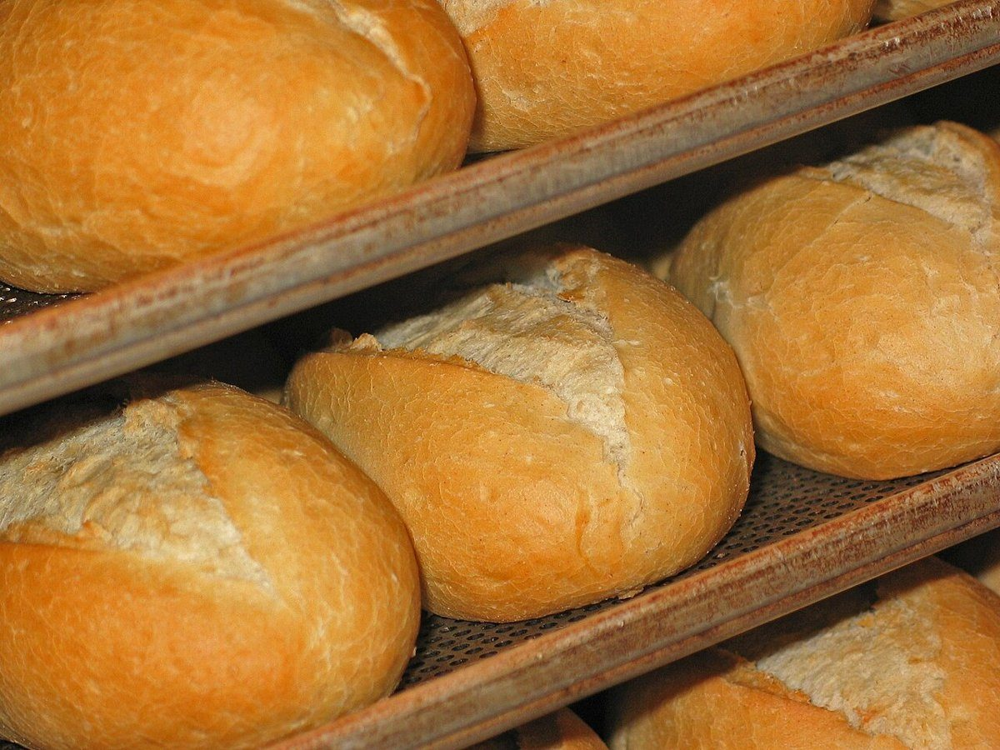

アクセス
場所
所在地とInstagramのみ確認できています。
所在地
〒720-0061
広島県福山市丸之内１丁目８−９
| 所在地 | 〒720-0061 広島県福山市丸之内１丁目８−９ |
|---|---|
| 電話 | 準備中 |
| 営業時間 | 準備中 |
| 定休日 | 準備中 |
| ご予約 | 準備中 |
| 駐車場 | 準備中 |
| SNS | Instagram @fukujuterrace |
地図
Googleマップ
ギャラリー(イメージ)
パンとコーヒー豆の写真



写真はイメージです。お店のものではありません。